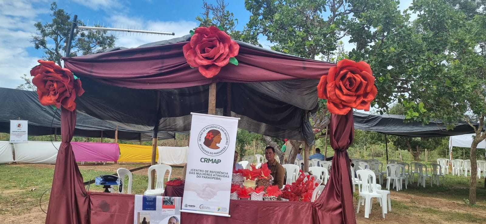
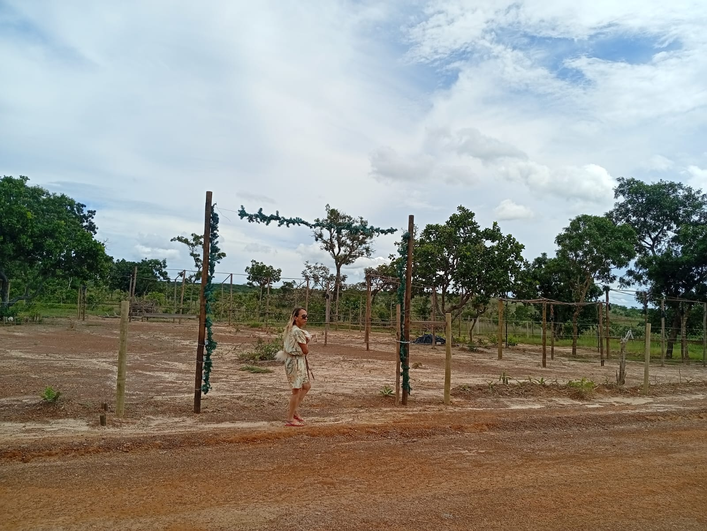
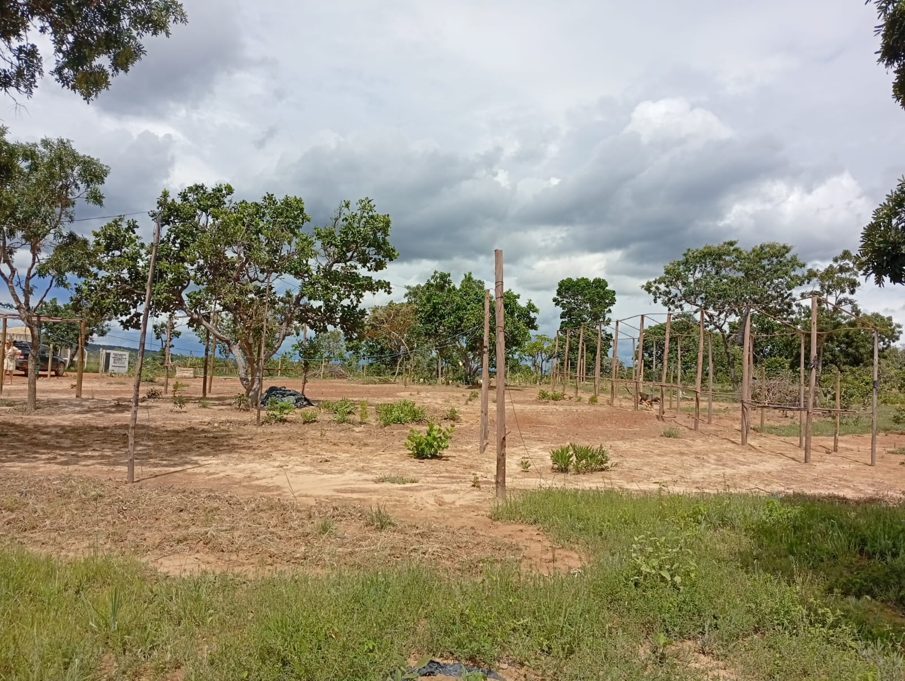

Terreno doado à CRMAP
Registro fotográfico do terreno doado à instituição, um passo importante para fortalecer a estrutura da CRMAP e ampliar ações em prol das mulheres atingidas.

Vista 2

Vista 3

Registro fotográfico do terreno doado à instituição, um passo importante para fortalecer a estrutura da CRMAP e ampliar ações em prol das mulheres atingidas.


